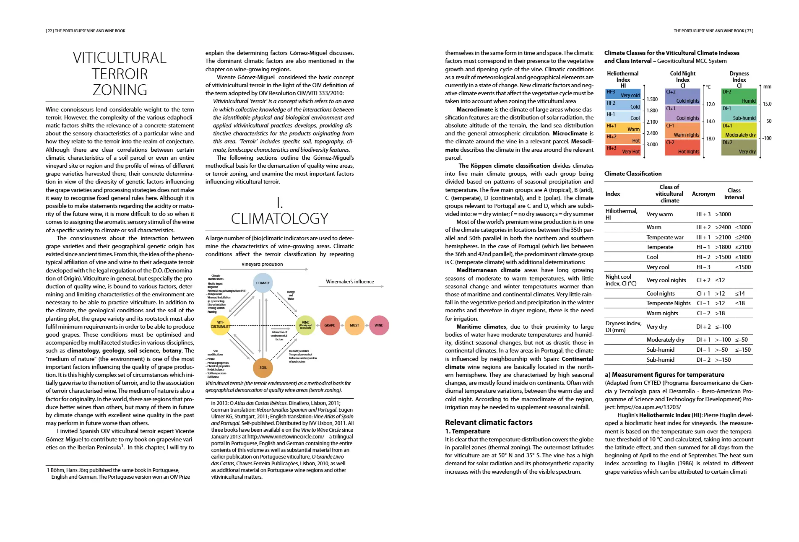
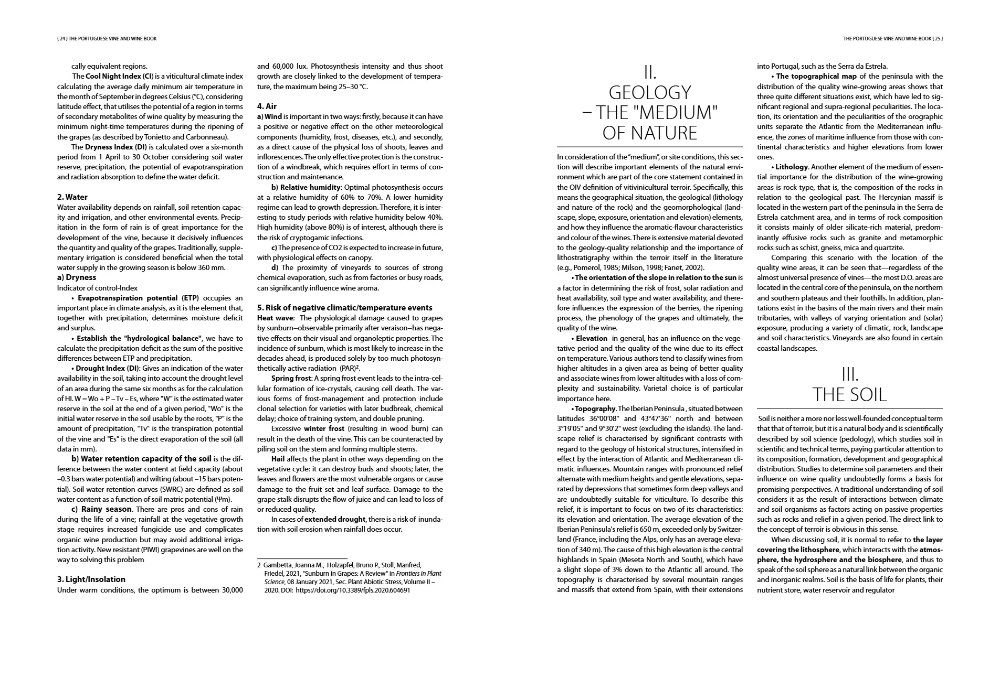
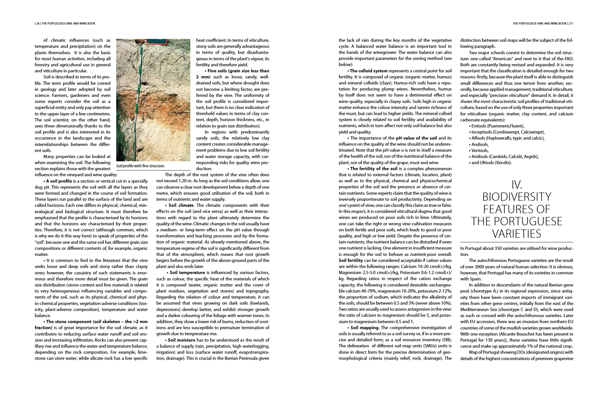
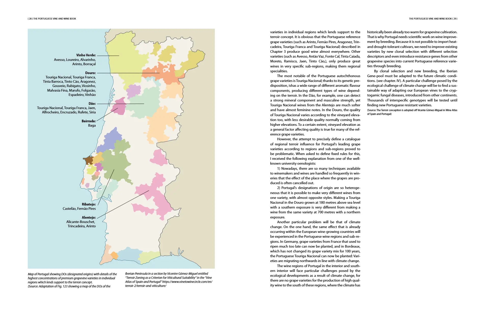

Chapter 2 · The Portuguese Vineyard and Wine Book
Terroir

Text · Pages 22–23
VITICULTURAL TERROIR ZONING Wine connoisseurs lend considerable weight to the term terroir. However, the complexity of the various edaphoclimatic factors shifts the relevance of a concrete statement about the sensory characteristics of a particular wine and how they relate to the terroir into the realm of conjecture. Although there are clear correlations between certain climatic characteristics of a soil parcel or even an entire vineyard site or region and the profile of wines of different grape varieties harvested there, their concrete determination in view of the diversity of genetic factors influencing the grape varieties and processing strategies does not make it easy to recognise fixed general rules here. Although it is possible to make statements regarding the acidity or maturity of the future wine, it is more difficult to do so when it comes to assigning the aromatic sensory stimuli of the wine of a specific variety to climate or soil characteristics. The consciousness about the interaction between grape varieties and their geographical genetic origin has existed since ancient times. From this, the idea of the phenotypical affiliation of vine and wine to their adequate terroir developed with t he legal regulation of the D.O. (Denomination of Origin). Viticulture in general, but especially the production of quality wine, is bound to various factors, determining and limiting characteristics of the environment are necessary to be able to practice viticulture. In addition to the climate, the geological conditions and the soil of the planting plot, the grape variety and its rootstock must also fulfil minimum requirements in order to be able to produce good grapes. These conditions must be optimised and accompanied by multifaceted studies in various disciplines, such as climatology, geology, soil science, botany. The "medium of nature" (the environment) is one of the most important factors influencing the quality of grape production. It is this highly complex set of circumstances which initially gave rise to the notion of terroir, and to the association of terroir characterised wine. The medium of nature is also a factor for originality. In the world, there are regions that produce better wines than others, but many of them in future by climate change with excellent wine quality in the past may perform in future worse than others. I invited Spanish OIV viticultural terroir expert Vicente Gómez-Miguel to contribute to my book on grapevine varieties on the Iberian Peninsula1. In this chapter, I will try to 1 Böhm, Hans Jörg published the same book in Portuguese, English and German. The Portuguese version won an OIV Prize
explain the determining factors Gómez-Miguel discusses. The dominant climatic factors are also mentioned in the chapter on wine-growing regions. Vicente Gómez-Miguel considered the basic concept of vitivinicultural terroir in the light of the OIV definition of the term adopted by OIV Resolution OIV/VITI 333/2010: Vitivinicultural ‘terroir’ is a concept which refers to an area in which collective knowledge of the interactions between the identifiable physical and biological environment and applied vitivinicultural practices develops, providing distinctive characteristics for the products originating from this area. ‘Terroir’ includes specific soil, topography, climate, landscape characteristics and biodiversity features. The following sections outline the Gómez-Miguel’s methodical basis for the demarcation of quality wine areas, or terroir zoning, and examine the most important factors influencing viticultural terroir.
I. CLIMATOLOGY
A large number of (bio)climatic indicators are used to determine the characteristics of wine-growing areas. Climatic conditions affect the terroir classification by repeating Vineyard prodution
Climate modi cations – Hydric imput Irrigation Potencial evapotranspiration (PET) – Temperature Vineyard installation (e. g. terracing) Line orientation Trellisig system Pruning
CLIMATE
Energy and Water
Winemaker’s in uence
VITICULTURALIST
Interaction of environmental factors
VINE (Variety and rootstock)
GRAPE
MUST
WINE
Soil modi cations – Pro le – Physical properties – Chemical properties – Hydric balance – Soil temperature – Soil fauna
SOIL
Humidity comtrol Temperature control In uence and expansion of root system
Viticultural terroir (the terroir environment) as a methodical basis for
geographical demarcation of quality wine areas (terroir zoning).
in 2013: O Atlas das Castas Ibéricas. Dinalivro, Lisbon, 2011; German translation: Rebsortenatlas Spanien und Portugal. Eugen Ulmer KG, Stuttgart, 2011; English translation: Vine Atlas of Spain and Portugal. Self-published. Distributed by IVV Lisbon, 2011. All three books have been availabl e on the Vine to Wine Circle since January 2013 at http://www.vinetowinecircle.com/ – a trilingual portal in Portuguese, English and German containing the entire contents of this volume as well as substantial material from an earlier publication on Portuguese viticulture, O Grande Livro das Castas, Chaves Ferreira Publicações, Lisbon, 2010, as well as additional material on Portuguese wine regions and other vitivinicultural matters.
themselves in the same form in time and space. The climatic factors must correspond in their presence to the vegetative growth and ripening cycle of the vine. Climatic conditions as a result of meteorological and geographical elements are currently in a state of change. New climatic factors and negative climate events that affect the vegetative cycle must be taken into account when zoning the viticultural area Macroclimate is the climate of large areas whose classification features are the distribution of solar radiation, the absolute altitude of the terrain, the land-sea distribution and the general atmospheric circulation. Microclimate is the climate around the vine in a relevant parcel. Mesoclimate describes the climate in the area around the relevant parcel. The Köppen climate classification divides climates into five main climate groups, with each group being divided based on patterns of seasonal precipitation and temperature. The five main groups are A (tropical), B (arid), C (temperate), D (continental), and E (polar). The climate groups relevant to Portugal are C and D, which are subdivided into: w = dry winter; f = no dry season; s = dry summer Most of the world's premium wine production is in one of the climate categories in locations between the 35th parallel and 50th parallel in both the northern and southern hemispheres. In the case of Portugal (which lies between the 36th and 42nd parallel), the predominant climate group is C (temperate climate) with additional determinations: Mediterranean climate areas have long growing seasons of moderate to warm temperatures, with little seasonal change and winter temperatures warmer than those of maritime and continental climates. Very little rainfall in the vegetative period and precipitation in the winter months and therefore in dryer regions, there is the need for irrigation. Maritime climates, due to their proximity to large bodies of water have moderate temperatures and humidity, distinct seasonal changes, but not as drastic those in continental climates. In a few areas in Portugal, the climate is influenced by neighbourship with Spain: Continental climate wine regions are basically located in the northern hemisphere. They are characterised by high seasonal changes, are mostly found inside on continents. Often with diurnal temperature variations, between the warm day and cold night. According to the macroclimate of the region, irrigation may be needed to supplement seasonal rainfall. Relevant climatic factors 1. Temperature It is clear that the temperature distribution covers the globe in parallel zones (thermal zoning). The outermost latitudes for viticulture are at 50° N and 35° S. The vine has a high demand for solar radiation and its photosynthetic capacity increases with the wavelength of the visible spectrum.
Climate Classes for the Viticultural Climate Indexes and Class Interval – Geoviticultural MCC System
Heliothermal Index HI HI 3 Very cold HI 2 Cold HI 1 Cool HI+1 Warm HI+2 Hot HI+3 Very Hot
1.500 1.800 2.100 2.400 3.000
Cold Night
Index
CI
°C
CI+2
Cold nights 12.0 CI+1
Cool nights 14.0 CI 1
Warm nights 18.0 CI 2
Hot nights
Dryness
Index
CI
mm
DI 2
Humid 15.0 DI 1
Sub-humid 50 DI+1
Moderately dry -100 DI+2
Very dry
Climate Classification
Index
Class of viticultural climate
Acronym
Class interval
Hiliothermal, HI
Very warm
HI + 3 >3000
Warm
HI + 2 >2400 ≤3000
Temperate war HI + 1 >2100 ≤2400
Temperate
HI – 1 >1800 ≤2100
Cool
HI – 2 >1500 ≤1800
Very cool
HI – 3
≤1500
Night cool index, CI (°C)
Very cool nights
CI + 2 ≤12
Cool nights
CI + 1 >12 ≤14
Temperate Nights CI – 1 >12 ≤18
Warm nights
CI – 2 >18
Dryness index, DI (mm)
Very dry
DI + 2 ≤–100
Moderately dry DI + 1 >–100 ≤–50
Sub-humid
DI – 1 >–50 ≤–150
Sub-humid
DI – 2 >–150
a) Measurement figures for temperature (Adapted from CYTED (Programa Iberoamericano de Ciencia y Tecnología para el Desarrollo - Ibero-American Programme of Science and Technology for Development) Project: https://oa.upm.es/13203/ Huglin's Heliothermic Index (HI): Pierre Huglin developed a bioclimatic heat index for vineyards. The measurement is based on the temperature sum over the temperature threshold of 10 °C and calculated, taking into account the latitude effect, and then summed for all days from the beginning of April to the end of September. The heat sum index according to Huglin (1986) is related to different grape varieties which can be attributed to certain climati

Text · Pages 24–25
cally equivalent regions. The Cool Night Index (CI) is a viticultural climate index calculating the average daily minimum air temperature in the month of September in degrees Celsius (°C), considering latitude effect, that utilises the potential of a region in terms of secondary metabolites of wine quality by measuring the minimum night-time temperatures during the ripening of the grapes (as described by Tonietto and Carbonneau). The Dryness Index (DI) is calculated over a six-month period from 1 April to 30 October considering soil water reserve, precipitation, the potential of evapotranspiration and radiation absorption to define the water deficit. 2. Water Water availability depends on rainfall, soil retention capacity and irrigation, and other environmental events. Precipitation in the form of rain is of great importance for the development of the vine, because it decisively influences the quantity and quality of the grapes. Traditionally, supplementary irrigation is considered beneficial when the total water supply in the growing season is below 360 mm. a) Dryness Indicator of control-Index • Evapotranspiration potential (ETP) occupies an important place in climate analysis, as it is the element that, together with precipitation, determines moisture deficit and surplus. • Establish the "hydrological balance", we have to calculate the precipitation deficit as the sum of the positive differences between ETP and precipitation. • Drought Index (DI): Gives an indication of the water availability in the soil, taking into account the drought level of an area during the same six months as for the calculation of HI. W = Wo + P – Tv – Es, where "W" is the estimated water reserve in the soil at the end of a given period, "Wo" is the initial water reserve in the soil usable by the roots, "P" is the amount of precipitation, "Tv" is the transpiration potential of the vine and "Es" is the direct evaporation of the soil (all data in mm). b) Water retention capacity of the soil is the difference between the water content at field capacity (about –0.3 bars water potential) and wilting (about –15 bars potential). Soil water retention curves (SWRC) are defined as soil water content as a function of soil matric potential (Ψm). c) Rainy season. There are pros and cons of rain during the life of a vine; rainfall at the vegetative growth stage requires increased fungicide use and complicates organic wine production but may avoid additional irrigation activity. New resistant (PIWI) grapevines are well on the way to solving this problem 3. Light/Insolation Under warm conditions, the optimum is between 30,000
and 60,000 lux. Photosynthesis intensity and thus shoot growth are closely linked to the development of temperature, the maximum being 25–30 °C. 4. Air a) Wind is important in two ways: firstly, because it can have a positive or negative effect on the other meteorological components (humidity, frost, diseases, etc.), and secondly, as a direct cause of the physical loss of shoots, leaves and inflorescences. The only effective protection is the construction of a windbreak, which requires effort in terms of construction and maintenance. b) Relative humidity: Optimal photosynthesis occurs at a relative humidity of 60% to 70%. A lower humidity regime can lead to growth depression. Therefore, it is interesting to study periods with relative humidity below 40%. High humidity (above 80%) is of interest, although there is the risk of cryptogamic infections. c) The presence of CO2 is expected to increase in future, with physiological effects on canopy. d) The proximity of vineyards to sources of strong chemical evaporation, such as from factories or busy roads, can significantly influence wine aroma. 5. Risk of negative climatic/temperature events Heat wave: The physiological damage caused to grapes by sunburn−observable primarily after veraison−has negative effects on their visual and organoleptic properties. The incidence of sunburn, which is most likely to increase in the decades ahead, is produced solely by too much photosynthetically active radiation (PAR)2. Spring frost: A spring frost event leads to the intra-cellular formation of ice-crystals, causing cell death. The various forms of frost-management and protection include clonal selection for varieties with later budbreak, chemical delay; choice of training system, and double pruning. Excessive winter frost (resulting in wood burn) can result in the death of the vine. This can be counteracted by piling soil on the stem and forming multiple stems. Hail affects the plant in other ways depending on the vegetative cycle: it can destroy buds and shoots; later, the leaves and flowers are the most vulnerable organs or cause damage to the fruit set and leaf surface. Damage to the grape stalk disrupts the flow of juice and can lead to loss of or reduced quality. In cases of extended drought, there is a risk of inundation with soil erosion when rainfall does occur. 2 Gambetta, Joanna M., Holzapfel, Bruno P., Stoll, Manfred, Friedel, 2021, "Sunburn in Grapes: A Review“ in Frontiers in Plant Science, 08 January 2021, Sec. Plant Abiotic Stress, Volume II – 2020. DOI: https://doi.org/10.3389/fpls.2020.604691
II. GEOLOGY – THE "MEDIUM" OF NATURE In consideration of the “medium”, or site conditions, this section will describe important elements of the natural environment which are part of the core statement contained in the OIV definition of vitivinicultural terroir. Specifically, this means the geographical situation, the geological (lithology and nature of the rock) and the geomorphological (landscape, slope, exposure, orientation and elevation) elements, and how they influence the aromatic-flavour characteristics and colour of the wines. There is extensive material devoted to the geology-quality relationship and the importance of lithostratigraphy within the terroir itself in the literature (e.g., Pomerol, 1985; Milson, 1998; Fanet, 2002). • The orientation of the slope in relation to the sun is a factor in determining the risk of frost, solar radiation and heat availability, soil type and water availability, and therefore influences the expression of the berries, the ripening process, the phenology of the grapes and ultimately, the quality of the wine. • Elevation in general, has an influence on the vegetative period and the quality of the wine due to its effect on temperature. Various authors tend to classify wines from higher altitudes in a given area as being of better quality and associate wines from lower altitudes with a loss of complexity and sustainability. Varietal choice is of particular importance here. • Topography. The Iberian Peninsula , situated between latitudes 36°00'08'' and 43°47'36'' north and between 3°19'05'' and 9°30'2" west (excluding the islands). The landscape relief is characterised by significant contrasts with regard to the geology of historical structures, intensified in effect by the interaction of Atlantic and Mediterranean climatic influences. Mountain ranges with pronounced relief alternate with medium heights and gentle elevations, separated by depressions that sometimes form deep valleys and are undoubtedly suitable for viticulture. To describe this relief, it is important to focus on two of its characteristics: its elevation and orientation. The average elevation of the Iberian Peninsula's relief is 650 m, exceeded only by Switzerland (France, including the Alps, only has an average elevation of 340 m). The cause of this high elevation is the central highlands in Spain (Meseta North and South), which have a slight slope of 3% down to the Atlantic all around. The topography is characterised by several mountain ranges and massifs that extend from Spain, with their extensions
into Portugal, such as the Serra da Estrela. • The topographical map of the peninsula with the distribution of the quality wine-growing areas shows that three quite different situations exist, which have led to significant regional and supra-regional peculiarities. The location, its orientation and the peculiarities of the orographic units separate the Atlantic from the Mediterranean influence, the zones of maritime influence from those with continental characteristics and higher elevations from lower ones. • Lithology. Another element of the medium of essential importance for the distribution of the wine-growing areas is rock type, that is, the composition of the rocks in relation to the geological past. The Hercynian massif is located in the western part of the peninsula in the Serra de Estrela catchment area, and in terms of rock composition it consists mainly of older silicate-rich material, predominantly effusive rocks such as granite and metamorphic rocks such as schist, gneiss, mica and quartzite. Comparing this scenario with the location of the quality wine areas, it can be seen that—regardless of the almost universal presence of vines—the most D.O. areas are located in the central core of the peninsula, on the northern and southern plateaus and their foothills. In addition, plantations exist in the basins of the main rivers and their main tributaries, with valleys of varying orientation and (solar) exposure, producing a variety of climatic, rock, landscape and soil characteristics. Vineyards are also found in certain coastal landscapes. III. THE SOIL Soil is neither a more nor less well-founded conceptual term that that of terroir, but it is a natural body and is scientifically described by soil science (pedology), which studies soil in scientific and technical terms, paying particular attention to its composition, formation, development and geographical distribution. Studies to determine soil parameters and their influence on wine quality undoubtedly forms a basis for promising perspectives. A traditional understanding of soil considers it as the result of interactions between climate and soil organisms as factors acting on passive properties such as rocks and relief in a given period. The direct link to the concept of terroir is obvious in this sense. When discussing soil, it is normal to refer to the layer covering the lithosphere, which interacts with the atmosphere, the hydrosphere and the biosphere, and thus to speak of the soil sphere as a natural link between the organic and inorganic realms. Soil is the basis of life for plants, their nutrient store, water reservoir and regulator

Text · Pages 26–27
of climatic influences (such as
heat coefficient. In terms of viticulture,
temperature and precipitation) on the
stony soils are generally advantageous
plants themselves. It is also the basis
in terms of quality, but disadvanta-
for most human activities, including all
geous in terms of the plant's vigour, its
forestry and agricultural use in general
fertility and therefore yield.
and viticulture in particular.
• Fine soils (grain size less than
Soil is described in terms of its pro-
2 mm) such as loose, sandy, well-
file. The term profile would be coined
drained soils, but where drought does
in geology and later adopted by soil
not become a limiting factor, are pre-
science. Farmers, gardeners and even
ferred by the vine. The uniformity of
some experts consider the soil as a
the soil profile is considered impor-
superficial entity and only pay attention
tant, but there is no clear indication of
to the upper layer of a few centimetres.
threshold values in terms of clay con-
The soil scientist, on the other hand,
tent, depth, horizon thickness, etc., in
sees three-dimensionally thanks to the
relation to grain size distribution).
soil profile and is also interested in its
In regions with predominantly
occurrence in the landscape and the
sandy soils, the relatively low clay
interrelationships between the differ-
content creates considerable manage-
ent soils.
ment problems due to low soil fertility
Many properties can be looked at
and water storage capacity, with cor-
when examining the soil. The following section explains those with the greatest Soil profile with fine structure.
responding risks for quality wine production.
influence on the vineyard and wine quality:
The depth of the root system of the vine often does
• A soil profile is a section or vertical cut in a specially not exceed 1.20 m. As long as the soil conditions allow, one
dug pit. This represents the soil with all the layers as they can observe a clear root development below a depth of one
were formed and changed in the course of soil formation. metre, which ensures good utilisation of the soil, both in
These layers run parallel to the surface of the land and are terms of nutrients and water supply.
called horizons. Each one differs in physical, chemical, min-
• Soil climate. The climatic components with their
eralogical and biological structure. It must therefore be effects on the soil (and vice versa) as well as their interac-
emphasised that the profile is characterised by its horizons tions with regard to the plant ultimately determine the
and that the horizons are characterised by their proper- quality of the wine. Climatic changes in the soil usually have
ties. Therefore, it is not correct (although common, which a medium- or long-term effect on the pH value through
is why we do it this way here) to speak of properties of the transformation and leaching processes and by the forma-
"soil", because one and the same soil has different grain size tion of organic material. As already mentioned above, the
compositions or different contents of, for example, organic temperature regime of the soil is significantly different from
matter.
that of the atmosphere, which means that root growth
• It is common to find in the literature that the vine begins before the growth of the above-ground parts of the
seeks loose and deep soils and stony rather than clayey plant and also ends later.
ones; however, the casuistry of such statements is enor-
• Soil temperature is influenced by various factors,
mous and therefore more detail must be given. The grain such as colour, the specific heat of the materials of which
size distribution (stone content and fine material) is related it is composed (water, organic matter and the cover of
to very heterogeneous influencing variables and compo- plant residues, vegetation and stones) and topography.
nents of the soil, such as its physical, chemical and phys- Regarding the relation of colour and temperature, it can
io-chemical properties, vegetation-adverse conditions (tox- be assumed that vines growing on dark soils (lowlands,
icity, plant-adverse composition), temperature and water depressions) develop better, and exhibit stronger growth
balance.
and a darker colouring of the foliage with warmer tones. In
• The stone component (soil skeleton – the >2 mm addition, they show a lower risk of burns, reduction of soot-
fraction) is of great importance for the soil climate, as it iness and are less susceptible to premature termination of
contributes to reducing surface water runoff and soil ero- growth due to temperature rise.
sion and increasing infiltration. Rocks can also prevent cap-
• Soil moisture has to be understood as the result of
illary rise and influence the water and temperature balance, a balance of supply (rain, precipitation, high waterlogging,
depending on the rock composition. For example, lime- irrigation) and loss (surface water runoff, evapotranspira-
stone can store water, while silicate rock has a low specific tion, drainage). This is crucial in the Iberian Peninsula given
the lack of rain during the key months of the vegetative cycle. A balanced water balance is an important tool in the hands of the winegrower. The water balance can also provide important parameters for the zoning method (see below): • The colloid system represents a central point for soil fertility. It is composed of organic (organic matter, humus) and mineral colloids (clays). Humus-rich soils have a reputation for producing plump wines. Nevertheless, humus by itself does not seem to have a detrimental effect on wine quality, especially in clayey soils. Soils high in organic matter enhance the colour intensity and tannin richness of the must, but can lead to higher yields. The mineral colloid system is closely related to soil fertility and availability of nutrients, which in turn affect not only soil balance but also yield and quality. • The importance of the pH value of the soil and its influence on the quality of the wine should not be underestimated. Note that the pH value o is not in itself a measure of the health of the soil, nor of the nutritional balance of the plant, nor of the quality of the grape, must and wine. • The fertility of the soil is a complex phenomenon that is related to external factors (climate, location, plant) as well as to the physical, chemical and physicochemical properties of the soil and the presence or absence of certain nutrients. Some experts claim that the quality of wine is inversely proportionate to soil productivity. Depending on one's point of view, one can classify this claim as true or false. In this respect, it is considered viticultural dogma that good wines are produced on poor soils rich in lime. Ultimately, one can take the right or wrong vine cultivation measures on both fertile and poor soils, which leads to good or poor quality, and high or low yield. Despite the presence of certain nutrients, the nutrient balance can be disturbed if even one nutrient is lacking. One element in insufficient measure is enough for the soil to behave as nutrient-poor overall. Soil fertility can be considered acceptable if cation values are within the following ranges: Calcium 10-20 cmol(+)/kg, Magnesium 2.5-5.0 cmol(+)/kg, Potassium 0.6-1.2 cmol(+)/ kg. Regarding ratios in respect of the cation exchange capacity, the following is considered desirable: exchangeable calcium 40-70%, magnesium 10-20%, potassium 2-12%; the proportion of sodium, which indicates the alkalinity of the soils, should be between 0.5 and 3% (never above 10%). Two ratios are usually used to assess antagonism in the vine: the ratio of calcium to magnesium should be 5, and potassium to magnesium between 0.5 and 1. • Soil mapping. The comprehensive investigation of soils is usually referred to as a soil survey or, if in a more precise and detailed form, as a soil resources inventory (SRI). The delineation of different soil map units (SMUs) units is done in direct form for the precise determination of geomorphological criteria (mainly relief, rock, drainage). The
distinction between soil maps will be the subject of the following paragraph. Two major schools coexist to determine the soil structure: one called "American" and next to it that of the FAO. Both are constantly being revised and expanded. It is very important that the classification is detailed enough for two reasons: firstly, because the plant itself is able to distinguish small differences and thus one terroir from another; secondly, because applied management, traditional viticulture, and especially "precision viticulture" demand it. In detail, it shows the most characteristic soil profiles of traditional viticulture, based on the use of only three properties important for viticulture (organic matter, clay content, and calcium carbonate equivalents): • Entisols (Psamment,Fluent), • Inceptisols (Combixerept, Calcixerept), • Alfisols (Haploxeralfs, typic and calcic), • Andisols, • Vertisols, • Aridisols (Cambids, Calcids, Argids), • and Ultisols (Xerults). IV. BIODIVERSITY FEATURES OF THE PORTUGUESE VARIETIES In Portugal about 350 varieties are utilised for wine production. The autochthonous Portuguese varieties are the result of over 2000 years of natural human selection. It is obvious, however, that Portugal has many of its varieties in common with Spain. In addition to descendants of the natural Iberian gene pool (chorotype A.) in its regional expression, since antiquity there have been constant imports of immigrant varieties from other gene centres, initially from the east of the Mediterranean Sea (chorotype C and D), which were used as such or crossed with the autochthonous varieties. Later with EU accession, there was an invasion from northern EU countries of some of the modish varieties grown worldwide. With one exception (Alicante Bouschet has been present in Portugal for 130 years)), these varieties have little significance and make up approximately 1% of the national crop.. Map of Portugal showing DOs (designated origins) with details of the highest concentrations of premium grapevine

Text · Pages 28–29
Vinho Verde: Avesso, Loureiro, Alvarinho, Arinto, Borraçal Douro: Touriga Nacional, Touriga Franca, Tinta Barroca, Tinto Cão, Aragonez, Gouveio, Rabigato, Viosinho, Malvasia Fina, Marufo, Folgasão, Espadeiro, Vinhão Dão: Touriga Nacional, Touriga Franca, Jaen, Alfrocheiro, Encruzado, Rufete, Síria Bairrada: Baga
Ribatejo: Castelão, Fernão Pires Alentejo: Alicante-Bouschet, Trincadeira, Arinto
Map of Portugal showing DOs (designated origins) with details of the highest concentrations of premium grapevine varieties in individual regions which lends support to the terroir concept. (Source: Adaptation of Fig. 123 showing a map of the DOs of the
Iberian Peninsula in a section by Vicentre Gómez-Miguel entitled “Terroir Zoning as a Criterion for Viticultural Suitability” in the “Vine Atlas of Spain and Portugal” https://www.vinetowinecircle.com/en/ terroir-2/terroir-and-viticulture/
varieties in individual regions which lends support to the terroir concept. It is obvious that the Portuguese reference grape varieties (such as Arinto, Fernão Pires, Aragonez, Trincadeira, Touriga Franca and Touriga Nacional) described in Chapter 3 produce good wine almost everywhere. Other varieties (such as Avesso, Antão Vaz, Fonte Cal, Tinta Caiada, Moreto, Ramisco, Jaen, Tinto Cão,), only produce great wines in very specific sub-regions, making them regional specialities. The most notable of the Portuguese autochthonous grape varieties is Touriga Nacional; thanks to its genetic predisposition, ishas a wide range of different aromatic flavour components, producing different types of wine depending on the terroir. In the Dão, for example, one can detect a strong mineral component and masculine strength, yet Touriga Nacional wines from the Alentejo are much softer and have almost feminine notes. In the Douro, the quality of Touriga Nacional varies according to the vineyard elevation too, with less desirable quality normally coming from higher elevations. To a certain extent, vineyard elevation as a general factor affecting quality is true for many of the reference grape varieties. However, the attempt to precisely define a catalogue of regional terroir influence for Portugal's leading grape varieties according to regions and sub-regions proved to be problematic. When asked to define fixed rules for this, I received the following explanation from one of the wellknown university oenologists: 1) Nowadays, there are so many techniques available to winemakers and wines are handled so frequently in wineries that the effect of the place where the grapes are produced is often cancelled out. 2) Portugal's designations of origin are so heterogeneous that it is possible to make very different wines from one variety, with almost opposite styles. Making a Touriga Nacional in the Douro grown at 180 metres above sea level with a southern exposure is very different from making a wine from the same variety at 700 metres with a northern exposure. Another particular problem will be that of climate change. On the one hand, the same effect that is already occurring within the European wine-growing countries will be experienced in the Portuguese wine regions and sub-regions. In Germany, grape varieties from France that used to ripen much too late can now be planted, and in Bordeaux, which has not changed its grape variety mix for 100 years, the Portuguese Touriga Nacional can now be planted: Varieties are migrating northwards in line with climate change. The wine regions of Portugal in the interior and southern interior will face particular challenges posed by the ecological developments as a result of climate change, for there are no grape varieties for the production of high quality wine to the south of these regions, where the climate has
historically been already too warm for grapevine cultivation. That is why Portugal needs scientific work on wine improvement by breeding. Because it is not possible to import heatand drought-tolerant cultivars, we need to improve existing varieties by new clonal selection with different selection descriptors and even introduce resistance genes from other grapevine species into current Portuguese reference varieties through breeding. By clonal selection and new breeding, the Iberian Gene-pool must be adapted to the future climatic conditions. (see chapter. IV). A particular challenge posed by the ecological challenge of climate change will be to find a sustainable way of adapting our European vines to the cryptogamic fungal diseases, introduced from other continents. Thousands of interspecific genotypes will be tested until finding new Portuguese resistant varieties. (Source: The Terroir conception is adopted off Vicente Gómez-Miguel in Wine Atlas of Spain and Portugal)